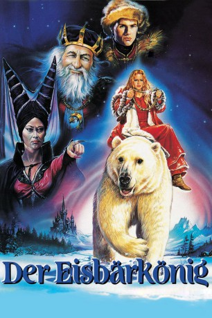

#10323 Der Eisbärkönig
Alternativ: The Polar Bear King (Englischer Titel)
 
 IMDB-Wertung: 6.1 / 10
IMDB-Wertung: 6.1 / 10  Metascore: 0
Metascore: 0 
Valemon, der junge König des Sommerlandes, weigert sich, die Hexe aus dem Nachbarland zu heiraten, und wird von ihr mit einem Fluch belegt. Sieben Jahre muss er als Eisbär durch die Welt ziehen. Und wenn er sich nachts in einen Menschen zurückverwandelt, darf niemand sein Gesicht sehen – sonst muss er die Hexe heiraten. Nach endlosen Streifzügen begegnet Valemon der schönen Tochter des Königs von Winterland. Sie erkennt in dem Eisbären den verwunschenen Prinzen, folgt ihm mit auf sein Schloss und wird seine Frau. Als die neugierige Prinzessin eines Nachts der Versuchung nicht widerstehen kann und das Gesicht ihres Mannes im Kerzenlicht betrachtet, scheint der grausame Fluch doch noch in Erfüllung zu gehen.
Jahr: 1991
Dauer: 82 Minuten
FSK:
Land: Norwegen Studio: UIPTonspuren:
Untertitel:
Auflösung: 720p (960x592) Größe: 1832 MB
Genre: Abenteuer, Fantasy, Familie
Regisseur: Ola Solum
Drehbuch: Erik Borge
Soundtrack: Geir Bøhren, Bent Åserud
Darsteller:
 Maria Bonnevie als Princess
Maria Bonnevie als Princess- Tobias Hoesl als King Valemon
- Monica Nordquist als King Valemon's Mother
- Anna-Lotta Larsson als Witch
- Jack Fjeldstad als King of the Winterland
- Jon Laxdal als Helper
- Helge Jordal als Devil
- Marika Enstad als Oldest Princess
- Kristin Mack als Middle Princess
- Rüdiger Kuhlbrodt als Merchant
- Ulrich Faulhaber als Merchant
- Bengt Ellis als Stable Master
- Karen Randers-Pehrson als Midwife
- Karen Høie als Midwife's Assistant
- Siw Anita Andersen als Jordemorassistent
- Julie Frilseth Langseth als Little Princess
- Ruth Gury Tessand als Little Princess
- Mariann Gury Tessand als Little Princess
- Bent Åserud als
Datei: X:\Märchen\Eisbärkönig, Der (1991, FSK, 960x592).mkv seit 29.12.2018
Festplatte: Kinder-Filme+Trick
 Es gibt insgesamt 61 Filme in der Gruppe 'Märchen'
Es gibt insgesamt 61 Filme in der Gruppe 'Märchen'